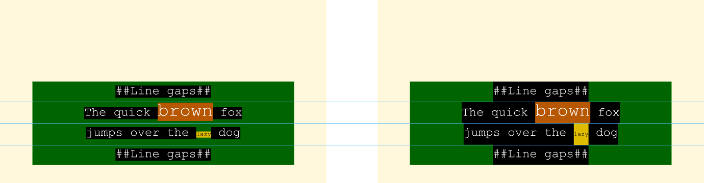
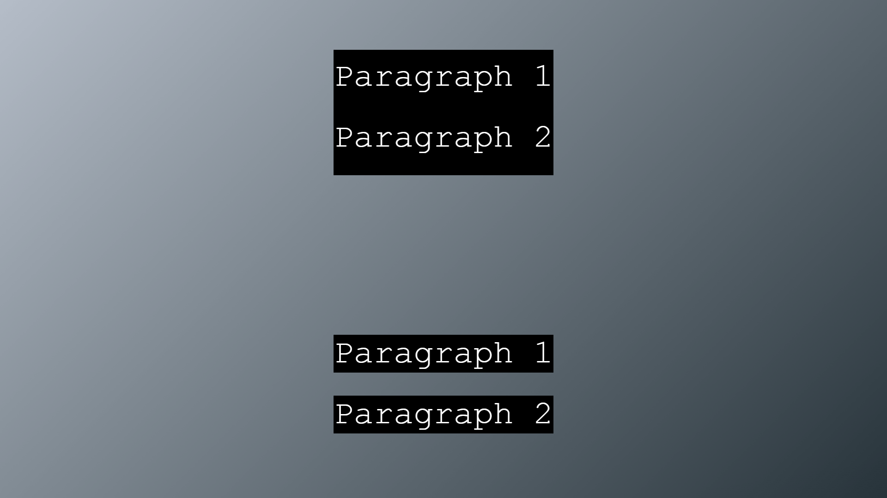

This specification defines two profiles of [[!ttml2-20180628]]: a text-only profile and an image-only profile. These
profiles are intended to be used across subtitle and caption delivery applications worldwide, thereby simplifying
interoperability, consistent rendering and conversion to other subtitling and captioning formats.
This specification improves on [[ttml-imsc1.0.1]] by supporting contemporary practices, while retaining compatibility with
[[ttml-imsc1.0.1]] documents. Relative to [[ttml-imsc1.0.1]], any addition or deprecation of features are summarized at
Appendix .
It is feasible to create documents that simultaneously conform to both [[ttml10-sdp-us]] and the text-only profile.
The specification defines extensions to [[!ttml2-20180628]], as well as incorporates extensions specified in
[[!SMPTE2052-1]] and [[!EBU-TT-D]].
Both profiles are based on [[SUBM]].
For this specification to exit the CR stage, at least 2 independent implementations of every feature defined in this
specification but not already present in either [[ttml2-20180628]] or [[ttml-imsc1.0.1]] need to be documented in the
implementation report. The Working Group does not require that implementations are publicly available but encourages them to be
so.
The Working Group has identified the following features "at risk", indicating that one or more may become prohibited prior
to advancement to Proposed Recommendation, based on implementation experience:
This specification defines two profiles of [[!ttml2-20180628]]: a text-only profile and an image-only profile. These
profiles are intended for subtitle and caption delivery worldwide, including dialog language translation, content description,
captions for deaf and hard of hearing, etc.
This specification maintains the scope of [[ttml-imsc1.0.1]] while adding the minimal set of features necessary to support
contemporary practices for worldwide subtitling and captioning delivery.
The specification is designed such that:
a valid Text Profile document as specified in [[ttml-imsc1.0.1]] is a valid Text Profile document as specified
herein;
a valid Image Profile document as specified in [[ttml-imsc1.0.1]] is a valid Image Profile document as specified
herein;
a processor defined herein transforms a Document Instance as specified in [[!ttml-imsc1.0.1]] as it would have
been transformed by a processor defined in [[ttml-imsc1.0.1]]; and
whenever possible, extensions defined in [[ttml-imsc1.0.1]] are (i) replaced by their [[ttml2-20180628]] equivalent and
(ii) deprecated.
The Text Profile is a syntactic superset of [[ttml10-sdp-us]], and a document can simultaneously conform to both
[[ttml10-sdp-us]] and the Text Profile.
Documentation Conventions
This specification uses the same conventions as [[!ttml2-20180628]] for the specification of parameter attributes, styling
attributes and metadata elements. In particular:
Section 2.3 of [[!ttml2-20180628]] specifies conventions used in the XML representation of elements; and
Sections 7.2, 10.2 and 10.4 of [[!ttml2-20180628]] specify conventions used when specifying the syntax of attribute
values, such as in .
All content of this specification that is not explicitly marked as non-normative is considered to be normative. If a section
or appendix header contains the expression "non-normative", then the entirety of the section or appendix is considered
non-normative.
This specification uses Feature and Extension designations as defined in Appendices E.1 and F.1 at
[[!ttml2-20180628]]:
when making reference to content conformance, these designations refer to the syntactic expression or the semantic
capability associated with each designated Feature or Extension; and
when making reference to processor conformance, these designations refer to processing requirements associated with each
designated Feature or Extension.
If the name of an element referenced in this specification is not namespace qualified, then the TT namespace applies (see
.)
Terms and Definitions
Character Information Item. See Section 2.2 at
[[!ttml2-20180628]].
Default Region. See Section 9.3.1 at [[!ttml2-20180628]].
Document Instance. See Section 2.2 at [[!ttml2-20180628]].
Default Processor Profile. As defined in [[!ttml2-20180628]].
Extension. See Section 2.2 at [[!ttml2-20180628]].
Feature. See Section 2.2 at [[!ttml2-20180628]].
Intermediate Synchronic Document. See Section 9.3.2 at [[!ttml2-20180628]].
Document Interchange Context. See Section 2.2 at [[!ttml2-20180628]].
Document Processing Context. As defined in [[!ttml2-20180628]].
Effective Processor Profile. As defined in [[!ttml2-20180628]].
SHALL satisfy all normative provisions specified by the profile;
MAY include any vocabulary, syntax or attribute value associated with a Feature or Extension whose
disposition is permitted or optional in the profile;
SHALL NOT include any vocabulary, syntax or attribute value associated with a Feature or Extension whose
disposition is prohibited in the profile.
A Document Instance, by definition, satisfies the requirements of Section 3.1 at [[!ttml2-20180628]],
and hence a Document Instance that conforms to a profile defined herein is also a conforming TTML1 Document
Instance.
SHALL satisfy the Generic Processor Conformance requirements at Section 3.2.1 of [[!ttml2-20180628]];
SHALL satisfy all normative provisions specified by the profile; and
SHALL implement presentation semantic support for every Feature and Extension designated as
permitted or permitted-deprecated by the profile, subject to any additional constraints on each
Feature and Extension as specified by the profile.
MAY implement presentation semantic support for every Feature and Extension designated as optional
by the profile, subject to any additional constraints on each Feature and Extension as specified by the
profile.
SHALL satisfy the Generic Processor Conformance requirements at Section 3.2.1 of [[!ttml2-20180628]];
SHALL satisfy all normative provisions specified by the profile; and
SHALL implement transformation semantic support for every Feature and Extension designated as
permitted or or permitted-deprecated by the profile, subject to any additional constraints on each
Feature and Extension as specified by the profile.
MAY implement transformation semantic support for every Feature and Extension designated as
optional by the profile, subject to any additional constraints on each Feature and Extension as
specified by the profile.
A Feature or Extension currently designated permitted-deprecated is intended to be designated as
optional or prohibited in future versions of this specification.
The use of the term presentation processor (transformation processor) within this specification
does not imply conformance to the DFXP Presentation Profile (DFXP Transformation Profile) specified in [[!ttml2-20180628]]. In
other words, it is not considered an error for a presentation processor (transformation processor) to conform to
a profile defined in this specification without also conforming to the DFXP Presentation Profile (DFXP Transformation
Profile).
The permitted and prohibited dispositions do not refer to the specification of a
ttp:feature or ttp:extension element as being permitted or prohibited within a
ttp:profile element.
Profiles
General
This specification defines two profiles of [[ttml2-20180628]]: the Text Profile and the Image Profile. In
the Text Profile, timed text is expressed using Unicode text exclusively, whereas, in the Image Profile, timed
text is expressed using bitmap images exclusively. The clear distinction between the two profiles reduces authoring and
processing complexity. For example, it allows systems to unambiguously specify whether text- and/or image-based timed text is
permitted.
Image-based timed text images can be used in scenarios where the required text rendering functionality is not
available, for example if the required fonts can not be distributed, or if the receiving processor has insufficient computing
resources to present text while displaying video. They can also be used to achieve a visual effect that is beyond the
capabilities of TTML, e.g. illuminated letters.
Notwithstanding special cases, e.g. a Document Instance that contains no p, span,
br element and no smpte:backgroundImage attribute, it is generally not possible to construct a
Document Instance that conforms to the Text Profile and Image Profile simultaneously, and it is not
possible to construct a Document Instance that results in the presentation of both text data and image data.
In applications that require subtitle/caption content in image form to be simultaneously available in text form, two
distinct Document Instances, one conforming to the Text Profile and the other
conforming to the Image Profile, SHOULD be offered. In addition, the Text ProfileDocument Instance
SHOULD be associated with the Image ProfileDocument Instance such that, when image content is encountered,
assistive technologies have access to its corresponding text form. The method by which this association is made is left to
each application.
The altText named metadata item also allows text equivalent string to be associated with an
image, e.g. to support indexation of the content and also facilitate quality checking of the document during authoring.
Annex specifically discusses this specification in the context of the [[WCAG20]]
guidelines.
Text Profile
The Text Profile consists of Sections , and .
Image Profile
The Image Profile consists of Sections , and .
Profile Resolution Semantics
General
The Profile Semantics specified in [[!ttml2-20180628]] apply.
The default value of prohibited attributes, e.g. ttp:contentProfileCombination, applies.
If one or more ebuttm:conformsToStandard elements, as specified in [[!EBU-TT-D]], are set to any of the
following designators, then the override content profile SHALL be set to the profile associated with any one of the
matching designators:
Document Instances remain subject to the content conformance requirements specified
at Section 3.1 of [[!ttml2-20180628]]. In particular, a Document Instance can contain elements and attributes not in
any TT namespace, i.e. in foreign namespaces, since such elements and attributes are pruned by the algorithm at Section 4
of [[!ttml2-20180628]] prior to evaluating content conformance.
For validation purposes it is good practice to define and use a content specification for all foreign namespace elements
and attributes used within a Document Instance.
Namespaces
The following namespaces (see [[!xml-names]]) are used in this specification:
The namespace prefix values defined above are for convenience and Document Instances
MAY use any prefix value that conforms to [[!xml-names]].
The namespaces defined by this specification are mutable [[namespaceState]]; all undefined names in these namespaces are
reserved for future standardization by the W3C.
Overflow
A Document Instance SHOULD be authored assuming strict clipping of content that falls out of region areas,
regardless of the computed value of tts:overflow for the region.
As specified in [[!ttml2-20180628]], tts:overflow has no effect on the extent of the region, and
hence the total normalized drawing area S(En) at .
In typical scenario, the same video program (the Related Video Object) will be used for Document
Instance authoring, delivery and user playback. The mapping from media time expression to Related Video Object
above allows the author to precisely associate subtitle video content with video frames, e.g. around scene transitions. In
circumstances where the video program is downsampled during delivery, the application can specify that, at playback, the
relative video object be considered the delivered video program upsampled to is original rate, thereby allowing subtitle
content to be rendered at the same temporal locations it was authored.
the ratio of the width to the height of the rectangular area is equal to the display aspect ratio of the Root
Container Region as determined in Appendix H of [[!ttml2-20180628]];
the center of the rectangular area is collocated with the center of the image frame;
the rectangular area is entirely within the image frame; and
the rectangular area has a height or width equal to that of the image frame.
The mapping algorithm above allows the author to precisely control caption/subtitle position relative to elements within
each frame of the video program, e.g. to match the position of actors. This mapping algorithm does not however specify the
presentation of either the video frame or Root Container Region on the ultimate display device. This presentation
depends on many factors, including user input, and can involve displaying only parts of the content. Authors are therefore
encouraged to follow best practices for the intended target applications. Below are selected examples:
A 16:9 video program is authored to ensure adequate presentation on 4:3 display devices using a center-cut.
Accordingly subtitle/captions are authored using ttp:displayAspectRatio="4 3", allowing the combination to
be displayed on both 4:3 and 16:9 display devices while preserving both caption/subtitles content and the relative
position of caption/subtitles with video elements.
A playback system zooms the content of example (a) to fill a 21:9 display, perhaps as instructed by the user. The
system elects to scale the Root Container Region to fit vertically within the display (maintaining its aspect
ratio as authored), at the cost of losing relative positioning between caption/subtitles and video elements.
The system described in (b) instead elects to map the Root Container Region to the video frame, maintaining
relative positioning between caption/subtitles and video elements but at the risk of clipping subtitles/captions.
Subtitle/captions are authored using ttp:displayAspectRatio="16 9" to match the 16:9 video, but
ittp:activeArea indicates that the Active Area is smaller than the Root Container Region. The
system, which uses a 4:3 display, elects to scale the video and the Root Container Region such that all of the
subtitle/caption content within the Active Area is visible, with positional alignment maintained, at the cost of
clipping some of the video.
Extension Vocabulary
ittp:aspectRatio
The #aspectRatio feature is designated as permitted-deprecated in the profiles
defined by this specification. The #displayAspectRatio feature provides equivalent semantics.
If present, the ittp:aspectRatio attribute SHALL conform to the following syntax:
ittp:aspectRatio
: numerator denominator // with int(numerator) != 0 and int(denominator) != 0
// where int(s) parses string s as a decimal integer.
numerator | denominator
: <digit>+ // no linear white-space is implied or permitted
// between each <digit> token
An ittp:aspectRatio attribute is considered to be significant only when specified on the tt
element.
If specified on the tt element, the ittp:aspectRatio attribute specifies the display aspect
ratio of the Root Container Region. If not specified, then the display aspect ratio of the Root Container
Region is determined according to Appendix H of [[!ttml2-20180628]].
ittp:progressivelyDecodable
The #progressivelyDecodable feature is designated as permitted-deprecated in
the profiles defined by this specification.
A progressively decodable Document Instance is structured to facilitate presentation before the document is
received in its entirety, and can be identified using ittp:progressivelyDecodable attribute.
A progressively decodable Document Instance is a Document Instance that conforms to the following:
no attribute or element of the TTML timing vocabulary is present within the head element;
given two intermediate synchronic documentsA and
B of the Document Instance, with start times TA and TB, respectively, TA is
not greater than TB if A includes a p element that lexically precedes any p
element that B includes;
no attribute of the TTML timing vocabulary is present on a descendant element of p; and
no element E1 explicitly references another element E2 where the opening tag of E2 is
lexically subsequent to the opening tag of E1.
If present, the ittp:progressivelyDecodable attribute SHALL conform to the following syntax:
ittp:progressivelyDecodable
: "true"
| "false"
An ittp:progressivelyDecodable attribute is considered to be significant only when specified on the
tt element.
If not specified, the value of ittp:progressivelyDecodable SHALL be considered to be equal to
"false".
[[!ttml2-20180628]] specifies explicitly referencing of elements identified using xml:id in the following
circumstances:
an element in body referencing region elements. In this case, Requirement 4 above is
always satisfied.
an element in body referencing style elements. In this case, Requirement 4 above is
always satisfied.
a region element referencing style elements. In this case, Requirement 4 above is always
satisfied.
a style element referencing other style elements. In this case, Requirement 4 provides an
optimization of style element ordering within the head element.
a ttm:actor element referencing a ttm:agent element. In this case, Requirement 4 provides
optimization of metadata elements ordering within the document.
a content element referencing ttm:agent elements using the ttm:agent attribute. In this
case, Requirement 4 provides optimization of metadata elements ordering within the document.
itts:forcedDisplay
itts:forcedDisplay can be used to hide content whose computed value of tts:visibility is
"visible" when the processor has been configured to do so via the application parameter
displayForcedOnlyMode.
If and only if the value of displayForcedOnlyMode is "true", a content element with a
itts:forcedDisplay computed value of "false" SHALL NOT produce any visible rendering, regardless
of the computed value of tts:visibility.
The itts:forcedDisplay attribute has no effect on content layout or composition, but merely determines
whether composed content is visible or not.
The itts:forcedDisplay attribute SHALL conform to the following:
Values:
false | true
Initial:
false
Applies to:
body, div, p, region, span
Inherited:
yes
Percentages:
N/A
Animatable:
discrete
Annex illustrates the use of itts:forcedDisplay in an application in which a
single document contains both hard of hearing captions and translated foreign language subtitles, using
itts:forcedDisplay to display translation subtitles always, independently of whether the hard of hearing
captions are displayed or hidden.
The presentation processor SHALL accept an optional boolean parameter called displayForcedOnlyMode,
whose value MAY be set by a context external to the presentation processor. If not set, the value of
displayForcedOnlyMode SHALL be assumed to be equal to "false".
The algorithm for setting the displayForcedOnlyMode parameter based on the circumstances under which the
Document Instance is presented is left to the application.
As specified in [[!ttml2-20180628]], the background of a region can be visible even if the computed value
of tts:visibility equals "hidden" for all active content within. The background of a region for
which itts:forcedDisplay equals "true" can therefore remain visible even if
itts:forcedDisplay equals "false" for all active content elements within the region and
displayForcedOnlyMode equals "true". Authors can avoid this situation, for instance, by ensuring
that content elements and the regions that they are flowed into always have the same value of
itts:forcedDisplay.
Although itts:forcedDisplay, like all the TTML style attributes, has no defined semantics on a
br content element, itts:forcedDisplay will apply to a br content element if it is
either defined on an ancestor content element of the br content element or it is applied to a region element
corresponding to a region that the br content element is being flowed into.
It is expected that the functionality of itts:forcedDisplay will be mapped to a conditional
style construct in a future revision of this specification.
The presentation semantics associated with itts:forcedDisplay are intended to be compatible
with those associated with the forcedDisplayMode attribute defined in [[CFF]].
ittm:altText
The #altText feature is designated as permitted-deprecated in the profiles
defined by this specification. The altText named metadata item provides equivalent semantics.
ittm:altText allows an author to provide a text string equivalent for an element, typically an image. This
text equivalent MAY be used to support indexing of the content and also facilitate quality checking of the document during
authoring.
The ittm:altText element SHALL conform to the following syntax:
<ittm:altText
xml:id = ID
xml:lang = string
xml:space = (default|preserve)
{any attribute not in the default namespace, any TT namespace or any IMSC namespace}>
Content: #PCDATA
</ittm:altText>
The ittm:altText element SHALL be a child of the metadata element.
specifies the use of the ittm:altText element with images.
In contrast to the common use of alt attributes in [[HTML5]], the ittm:altText
attribute content is not intended to be displayed in place of the element if the element is not loaded. The
ittm:altText attribute content can however be read and used by assistive technologies.
ittp:activeArea
The Active Area of a Document Instance is the area within the Root Container Region that the
author intends to be minimally visible to the viewer. This area typically fully contains all of the referenced regions
within the Document Instance.
Under normal circumstances, the entirety of the Root Container Region is presented. However, under special
circumstances, such as when the related video object is cropped, a system can, for instance, use the
ittp:activeArea parameter to avoid cropping areas of the Root Container Region that are intended to
be visible to the viewer. The specific behavior of the system is however left undefined intentionally: the system can
select a presentation mode appropriate to the display shape, user preferences, etc. The ittp:activeArea is
analogous to the Active Format Description (AFD) metadata commonly used in broadcast applications.
The Active Area is specified using the ittp:activeArea attribute.
If present, the ittp:activeArea attribute SHALL conform to the following syntax:
ittp:activeArea
: leftOffset topOffset width height
leftOffset | topOffset | width | height
: <percentage> // where <percentage> is non-negative and not greater than 100%.
The width and height percentage values are the width and height of the Active Area.
The leftOffset and topOffset percentage values specify an alignment point between the Root
Container Region and the Active Area.
The origin top left {x, y} percentage coordinates of the Active Area SHALL be calculated as follows:
x = leftOffset * (1 - width/100)
y = topOffset * (1 - height/100)
The use of left and top offset positions is co-incident with the [[css3-background]] background-position
property where a two percentage value position is used.
The syntax of the ittp:activeArea parameter is such that the Active Area cannot extend outside the
Root Container Region in any dimension.
The ittp:activeArea attribute is considered to be significant only when specified on the tt
element.
The itts:fillLineGap attribute allows the author to control the application of background between
successive line areas.
If itts:fillLineGap="true" then the background of each inline area generated by descendant spans of the
p element SHALL extend to the before-edge and after-edge of its containing line area
(before-edge and after-edge are defined at Section 4.2.3 of [[XSL11]]).
The itts:fillLineGap attribute SHALL conform to the following:
Values:
false | true
Initial:
false
Applies to:
p
Inherited:
yes
Percentages:
N/A
Animatable:
discrete
In the following example, the p specifies itts:fillLineGap="true", and, as a result, no gap
exists between its lines.

Illustrative rendition of the example immediately above with itts:fillLineGap="true" removed (left) or
preserved (right). Blue lines have been added to show the before-edge and after-edge of each line
area, which are coincident for successive line areas.
Also, as illustrated in the following example, because the line areas of successive p elements are
contiguous, no gap exists between two successive p elements where itts:fillLineGap="true".

Illustrative rendition of the example immediately above, where itts:fillLineGap="true" on the two
paragraphs of the top region, itts:fillLineGap="false" on the two paragraphs of the bottom region.
Profile Signaling
General
The ttp:contentProfiles attribute SHOULD be present on the tt element, with exactly one of its
values equal to the designator of the profile (either Text Profile or Image Profile) to which the Document
Instance conforms.
The ttp:contentProfiles attribute is prohibited in some profiles, e.g. [[EBU-TT-D]] as
discussed in .
To minimize the risk of incompatibility, the use of the ttp:contentProfiles attribute and
other syntax introduced in [[ttml2-20180628]] is not recommended in documents intended to conform to profiles that are
based on [[TTML1]], e.g. [[SMPTE2052-1]], [[ttml-imsc1]] , [[ttml-imsc1.0.1]] , or [[ttml10-sdp-us]].
The ttp:contentProfiles attribute can include additional designators, beyond those specified
herein, including designators for other versions of this specification.
specifies the process by which the effective processor profile
associated with the Document Instance is determined.
Signaling conformance using EBU-TT metadata
When using the ebuttm:conformsToStandard element specified in [[!EBU-TT-M]], the designators of the Text
Profile and Image Profile SHALL be used when indicating conformance to the corresponding profile.
See for a sample Document Instance that follows the recommendations
of this section.
Hypothetical Render Model
It SHALL be possible to apply the Hypothetical Render Model specified in Section
to any sequence of consecutive intermediate synchronic documents without
error as defined in Section .
Style Resolution
The following style properties SHALL be subject to the Style Resolution procedures specified at Section 10.4 of
[[!ttml2-20180628]]:
itts:fillLineGap
itts:forcedDisplay
ebutts:linePadding
ebutts:multiRowAlign
The style properties above can be specified as attributes of the initial element specified at
Section 10.1.1 of [[!ttml2-20180628]].
Constraints
Region
Presented Region
A presented region is a temporally active region that satisfies the following conditions:
the computed value of tts:opacity is not equal to "0.0"; and
the computed value of tts:display is not "none"; and
the computed value of tts:visibility is not "hidden"; and
either (a) content is selected into the region or (b) the computed value of tts:showBackground is
equal to "always" and the computed value of tts:backgroundColor has non-transparent
alpha.
Dimensions and Position
All regions SHALL NOT extend beyond the Root Container Region, i.e. every coordinate in the set of coordinates
of each region is also in the set of coordinates of the Root Container Region.
A altText named metadata item SHALL NOT be present in a Document Instance if any
ittm:altText element is also present.
#altText
The ittm:altText element SHOULD NOT be present unless compatibility with [[ttml-imsc1.0.1]] processors is
desired.
A ittm:altText element SHALL NOT be present in a Document Instance if any altText named
metadata item element is also present.
#aspectRatio
The ittp:aspectRatio attribute SHOULD NOT be present in a Document Instance unless compatibility
with [[ttml-imsc1.0.1]] processors is desired.
The ittp:aspectRatio attribute SHALL not be present in a Document Instance if any
ttp:displayAspectRatio attribute is also present.
#displayAspectRatio
The ttp:displayAspectRatio attribute SHALL not be present in a Document Instance if any
ittp:aspectRatio attribute is also present.
#extent-root
If the Document Instance includes any length value that uses the px expression,
tts:extent SHALL be present on the tt element.
#frameRate
If the Document Instance includes any clock time expression that uses the frames term or any offset
time expression that uses the f metric, the ttp:frameRate attribute SHALL be present on the
tt element.
#length-cell
c units SHALL NOT be present outside of the value of ebutts:linePadding.
#origin
The tts:origin attribute SHALL NOT be present in a Document Instance if any
tts:position attribute is also present.
#tickRate
ttp:tickRate SHALL be present on the tt element if the document contains any time expression
that uses the t metric.
#timeBase-media (non-normative)
[[ttml2-20180628]] specifies that the default timebase is "media" if ttp:timeBase is not
specified on tt.
#time-offset-with-frames (non-normative)
As specified in [[!ttml2-20180628]], a #time-offset-with-frames expression is translated to a media time M
according to M = 3600 · hours + 60 · minutes + seconds + (frames ÷ (ttp:frameRateMultiplier ·
ttp:frameRate)).
#timing
For any content element that contains br elements or text nodes or a smpte:backgroundImage
attribute, both the begin attribute and one of either the end or dur attributes
SHOULD be specified on the content element or at least one of its ancestors.
usesForced named metadata item
The usesForced named metadata item does not apply since the condition attribute is
prohibited.
The itts:forcedDisplay attribute is used to specify forced content semantics.
This profile is associated with the following profile designator:
Profile Name
Profile Designator
IMSC 1.1 Text
http://www.w3.org/ns/ttml/profile/imsc1.1/text
Recommended Character Sets
A Document Instance SHOULD be authored using characters selected from the sets specified in .
Reference Fonts
When rendering codepoints matching one of the combinations of computed font family and codepoints listed in , a processor SHALL use a font that generates a glyph sequence whose dimension is substantially
identical to the glyph sequence that would have been generated by one of the specified reference fonts.
This clause only applies to codepoints supported by the processor. See
for codepoints that a processor is likely to encounter for various languages.
When a content author sets a bounding box for a subtitle, they want to maximize the likelihood that the text
will fit within it when displayed by the processor. If the processor doesn't use the specific font the content author had in
mind, the font actually used might cause the text to grow in size so that it no longer fits in the bounding box. This is
further compounded by differences in the way text wraps when a font has bigger glyphs, which might increase the number of
lines used, and increased line spacing, which might also push some of the text outside the bounding box.
To help ensure that things such as text size, line breaking, and line height behave as expected relative to the size of the
bounding box set by the content author, the author can use one of the reference fonts defined by this specification. This
specification requires processors to support one or more fonts with similar font metrics as reference fonts. Note that,
however, the reference fonts as currently defined only cover characters used for a few writing systems – in particular, a
subset of those based on Latin, Greek, Cyrillic, Hebrew, and Arabic scripts.
Implementations can use fonts other than those specified in . Two fonts with
equal metrics can have a different appearance, but flow identically.
Constraints
#color
The initial value of tts:color SHALL be "white".
This is consistent with [[!SMPTE2052-1]].
The named color green defined in [[!ttml2-20180628]] is equivalent to the RGB color triple
#008000 and is not full luminance. For full luminance green, an author can specify the RGB color triple
#00ff00 or the named color lime.
#extent-region
The tts:extent attribute SHALL be present on all region elements, where it SHALL use
px units, percentage values, or root container relative units.
#fontFamily-generic
In absence of specific instructions on the choice of font families, and in order to enhance reproducibility of line
fitting, authors are encouraged to use the monospaceSerif or proportionalSansSerif generic font
families, for which reference font metrics are defined at .
If the computed value of tts:fontFamily is "default", then the used value of
tts:fontFamily SHALL be "monospaceSerif".
The term used value is defined in CSS 2.1, as normatively referenced by [[!ttml2-20180628]].
#fontFamily
Linear white-space SHOULD NOT appear between components of the specified value of
tts:fontFamily.
#length-negative
Strictly negative length expressions SHALL NOT be used with attributes other than:
tts:disparity;
tts:shear;
tts:lineShear; and
tts:textShadow.
#lineHeight
The specified value of the tts:lineHeight attribute SHOULD be such that specified style set of each
p element contains a tts:lineHeight property whose value is not normal.
Implementation of the normal value is not uniform at the time of this writing.
#origin
The tts:origin attribute SHALL use px units or percentage values.
#position
The tts:position attribute SHALL NOT be present in a Document Instance if any
tts:origin attribute is also present.
The tts:position attribute SHALL use px units, percentage values or root container relative
units.
#rubyAlign
The specified value of the tts:rubyAlign attribute SHALL be such that its computed value is
center or spaceAround.
#textOutline-unblurred
The specified value of the tts:textOutline attribute SHALL be such that its computed value on any
span element is 10% or less than the computed value of tts:fontSize attribute on the same
element.
#textShadow
The specified value of the tts:textShadow attribute SHALL NOT have more than 4 <shadow>
values.
ebutts:linePadding
If used, the attribute ebutts:linePadding MAY be specified on elements region,
body, div and p in addition to style.
For the purposes of constructing an intermediate synchronic document, a div element with a
smpte:backgroundImage attribute SHALL NOT be considered empty.
Image Resources
An image resource is a PNG datastream as specified in [[!PNG]].
If a pHYs chunk is present, it SHALL indicate square pixels.
[[PNG]] specifies that, if no pixel aspect ratio is carried, the default of square pixels is assumed.
Constraints
#content
The p, span and br elements SHALL NOT be present. See Section for constraints on div elements.
#extent-region
The tts:extent attribute SHALL be present on all region elements, where it SHALL use
px units.
#length-negative
Strictly negative length expressions SHALL NOT be used with attributes other than:
The image element SHALL be a child of a div element that does not have a
smpte:backgroundImage attribute.
A div element SHALL have zero or one child image element.
A div element that contains a child image element SHOULD contain a metadata
element containing an altText named metadata item that is a Text Alternative of the image resource
referenced by the image element.
An image element SHALL specify a src attribute, which references an image resource that
conforms to .
An image element SHALL specify a type attribute.
An image element SHALL specify a tts:extent attribute, which shall be equal to:
the tts:extent attribute of the region in which the image element is presented; and
the dimensions (in pixels) of the image resource.
SMPTE #image Extension
smpte:backgroundImage
smpte:backgroundImage MAY be used with the semantics of the attribute defined by Sections 5.5.2 of
[[!SMPTE2052-1]].
If a smpte:backgroundImage attribute is applied to a div element:
the width and height (in pixels) of the image source referenced by smpte:backgroundImage SHALL be
equal to the width and height (as specified by the tts:extent attribute using px units) of
the region in which the div element is presented;
the div element SHOULD contain a metadata element containing an ittm:altText
element that is a Text Alternative of the image referenced by the smpte:backgroundImage attribute;
and
The smpte:backgroundImage attribute SHALL reference an image resource that conforms to .
In order to individually position multiple div elements, each div can be
associated with a distinct region with the desired tts:extent and tts:origin.
The rendering semantics of smpte:backgroundImage are not identical to those of
background-image specified at Section 7.8.3 of [[XSL11]]. In particular, Section 5.5.6 at [[!SMPTE2052-1]]
amends the semantics of background-image by specifying values for its min-height and
min-width properties.
smpte:backgroundImageHorizontal and and smpte:backgroundImageVertical
smpte:backgroundImageHorizontal and smpte:backgroundImageVertical SHALL NOT be used.
smpte:image
smpte:image SHALL NOT be used.
Hypothetical Render Model
Overview (non-normative)
This Section specifies the Hypothetical Render Model illustrated in .
The purpose of the model is to limit Document Instance complexity. It is not intended as a specification of the
processing requirements for implementations. For instance, while the model defines a glyph buffer for the purpose of limiting
the number of glyphs displayed at any given point in time, it neither requires the implementation of such a buffer, nor
models the sub-pixel character positioning and anti-aliased glyph rendering that can be used to produce text output.
The model specifies an (hypothetical) time required for completely painting an intermediate synchronic document as
a proxy for complexity. Painting includes drawing region backgrounds, rendering and copying glyphs, and decoding and copying
images. Complexity is then limited by requiring that painting of intermediate synchronic document En
completes before the end of intermediate synchronic document En-1.
Whenever applicable, constraints are specified relative to Root Container Region dimensions, allowing subtitle
sequences to be authored independently of Related Video Object resolution.
To enable scenarios where the same glyphs are used in multiple successive intermediate synchronic documents, e.g. to convey a CEA-608/708-style roll-up (see
[[CEA-608]] and [[CEA-708]]), the Glyph Buffers Gn and Gn-1 store rendered glyphs across intermediate synchronic documents, allowing glyphs to be copied into the Presentation
Buffer instead of rendered, a more costly operation.
Similarly, Decoded Image Buffers Dn and Dn-1 store decoded images across intermediate synchronic documents, allowing images to be copied into the Presentation
Buffer instead of decoded.
General
The Presentation Compositor SHALL render in Presentation Buffer Pn each successive intermediate synchronic
document En using the following steps in order:
clear the pixels, except for the first intermediate synchronic document E0 for the which the pixels
of P0 SHALL be assumed to have been cleared;
paint, according to stacking order, all background pixels for each region;
paint all pixels for background colors associated with text or image subtitle content; and
paint the text or image subtitle content.
The Presentation Compositor SHALL start rendering En:
at the presentation time of E0 minus Initial Painting Delay (IPD), if n = 0; or
BDraw is the normalized background drawing performance factor;
DURT(En) is the duration, in seconds, for painting the text subtitle content for intermediate
synchronic document En, as specified in Section ; and
DURI(En) is the duration, in seconds, for painting the image subtitle content for intermediate
synchronic document En, as specified in Section .
The contents of the Presentation Buffer Pn SHALL be transferred instantaneously to Presentation Buffer
Pn-1 at the presentation time of intermediate synchronic document En, making the latter
available for display.
It is possible for the contents of Presentation Buffer Pn-1 to never be displayed. This can happen
if Presentation Buffer Pn is copied twice to Presentation Buffer Pn-1 between two consecutive video
frame boundaries of the Related Video Object.
It SHALL be an error for the Presentation Compositor to fail to complete painting pixels for En before the
presentation time of En.
Unless specified otherwise, the following table SHALL specify values for IPD and BDraw.
BDraw effectively sets a limit on fillings regions - for example, assuming that the Root Container
Region is ultimately rendered at 1920×1080 resolution, a BDraw of 12 s-1 would correspond to a fill rate of
1920×1080×12/s=23.7×220pixels s-1.
NBG(Ri) SHALL be the total number of tts:backgroundColor attributes associated with the given
region Ri in the intermediate synchronic document. A tts:backgroundColor attribute is
associated with a region when it is explicitly specified (either as an attribute in the element, or by reference to a
declared style) in the following circumstances:
it is specified on the region layout element that defines the region; or
it is specified on a div, p, span or br content element that is to
be flowed into the region for presentation in the intermediate synchronic document (see [[!ttml2-20180628]] for more
details on when a content element is followed into a region); or
it is specified on a set animation element that is to be applied to content elements that are to be flowed
into the region for presentation in the intermediate synchronic document (see [[!ttml2-20180628]] for more details
on when a set animation element is applied to content elements).
Even if a specified tts:backgroundColor is the same as specified on the nearest ancestor content element or
animation element, specifying any tts:backgroundColor SHALL require an additional fill operation for all region
pixels.
Paint Images
The Presentation Compositor SHALL paint into the Presentation Buffer Pn all visible pixels of presented images
of intermediate synchronic document En.
For each presented image, the Presentation Compositor SHALL either:
if an identical image is present in Decoded Image Buffer Dn, copy the image from Decoded Image Buffer
Dn to the Presentation Buffer Pn using the Image Copier; or
if an identical image is present in Decoded Image Buffer Dn-1, i.e. an identical image was present in
intermediate synchronic document En-1, copy using the Image Copier the image from Decoded Image Buffer
Dn-1 to both the Decoded Image Buffer Dn and the Presentation Buffer Pn; or
otherwise, decode the image using the Image Decoder the image into the Presentation Buffer Pn and Decoded
Image Buffer Dn.
Two images SHALL be identical if and only if they reference the same encoded image source.
The duration DURI(En) for painting images of an intermediate synchronic document
En in the Presentation Buffer SHALL be as follows:
DURI(En) = ∑Ii ∈ Ic NRGA(Ii) / ICpy
+ ∑Ij ∈ Id NSIZ(Ij) / IDec
NSIZ(Ii) SHALL be the number of pixels of presented image Ii.
The contents of the Decoded Image Buffer Dn SHALL be transferred instantaneously to Decoded Image Buffer
Dn-1 at the presentation time of intermediate synchronic document En.
The total size occupied by images stored in Decoded Image Buffers Dn or Dn-1 SHALL be the sum of
their Normalized Image Area.
The size of Decoded Image Buffers Dn or Dn-1 SHALL be the Normalized Decoded Image Buffer Size
(NDIBS).
Unless specified otherwise, the following table SHALL specify ICpy, IDec, and NDBIS.
Parameter
Initial value
Normalized image copy performance factor (ICpy)
6
Image Decoding rate (IDec)
1 × 220 pixels s-1
Normalized Decoded Image Buffer Size (NDIBS)
0.9885
Paint Text
In the context of this section, a glyph is a tuple consisting of (i) one character and (ii) the computed values
of the following style properties:
tts:color
tts:fontFamily
tts:fontSize
tts:fontStyle
tts:fontWeight
tts:textDecoration
tts:textOutline
tts:textShadow
While one-to-one mapping between characters and typographical glyphs is generally the rule in some scripts,
e.g. latin script, it is the exception in others. For instance, in arabic script, a character can yield multiple glyphs
depending on its position in a word. The Hypothetical Render Model always assumes a one-to-one mapping, but reduces the
performance of the glyph buffer for scripts where one-to-one mapping is not the general rule (see GCpy below).
if an identical glyph is present in Glyph Buffer Gn, copy the glyph from Glyph Buffer
Gn to the Presentation Buffer Pn using the Glyph Copier; or
if an identical glyph is present in Glyph Buffer Gn-1, i.e. an identical glyph was present in
intermediate synchronic document En-1, copy using the Glyph Copier the glyph from Glyph Buffer
Gn-1 to both the Glyph Buffer Gn and the Presentation Buffer Pn; or
otherwise render using the Glyph Renderer the glyph into the Presentation Buffer Pn and Glyph Buffer
Gn.
Example of Presentation Compositor Behavior for Text Rendering
The duration DURT(En) for rendering the text of an intermediate synchronic document
En in the Presentation Buffer is as follows:
NRGA(Gi) does not take into account decorations (e.g. underline), effects (e.g. outline) or actual
typographical glyph aspect ratio. An implementation can determine an actual buffer size needs based on worst-case glyph size
complexity.
The contents of the Glyph Buffer Gn SHALL be copied instantaneously to Glyph Buffer Gn-1 at the
presentation time of intermediate synchronic document En.
It SHALL be an error for the sum of NRGA(gi) over all glyphs Glyph Buffer Gn
to be larger than the Normalized Glyph Buffer Size (NGBS).
Unless specified otherwise, the following table specifies values of GCpy, Ren and NGBS.
Normalized glyph copy performance factor (GCpy)
Script property (see Standard Annex #24 at [[!UNICODE]]) for the character of
gi
GCpy
latin, greek, cyrillic, hebrew or base
12
any other value
3
Text rendering performance factor Ren(Gi)
Block property (see [[!UNICODE]]) for the character of gi
Ren(Gi)
CJK Unified Ideograph
0.6
any other value
1.2
Normalized Glyph Buffer Size (NGBS)
1
The choice of font by the presentation processor can increase rendering complexity. For instance, a cursive
font can generally result in a given character yielding different typographical glyphs depending on context, even if latin
script is used.
While a Processor is required to accept, and encouraged to render, all Character Information Items, practical
considerations can result in a Processor being capable of rendering only a subset of them. In order to increase the
confidence that text will be presented correctly by Processors targeting specific languages, this section defines common
character sets that authors are encouraged to use.
The common character sets defined herein are expected to evolve over time, and implementers are encouraged to
review them regularly.
The definition of common character sets herein is in no way intended to limit the set of characters that a
Processor renders.
Implementers are cautioned that a given sequence of characters can yield different visual representations
depending on the context, including surrounding characters, language and font. In other words, there is not necessarily a
one-to-one mapping between a character and its visual representation.
For a given language indicated using the xml:lang attribute, the common character set is equal to the union of
the following sets:
the main exemplar character set specified for the language in [[!CLDR]] as well as any corresponding uppercase characters
as specified in [[!UNICODE]]; and
the punctuation exemplar character set specified for the language in [[!CLDR]];
the digits and symbols included in all numberSystems specified for the language in [[!CLDR]];
the base character set specified in Table 1; and
supplementary characters specified for the language in Table 2, if any.
Some of the sets above can overlap.
Table 1 captures the set of characters intended to be always available to authors. The terms used in the table are defined
in [[!UNICODE]].
Table 1. Base Character Set.
(Basic Latin)
U+0020 - U+007E
(Latin-1 Supplement)
U+00A0 - U+00FF
(Latin Extended-A)
U+0152 : LATIN CAPITAL LIGATURE OE
U+0153 : LATIN SMALL LIGATURE OE
U+0160 : LATIN CAPITAL LETTER S WITH CARON
U+0161 : LATIN SMALL LETTER S WITH CARON
U+0178 : LATIN CAPITAL LETTER Y WITH DIAERESIS
U+017D : LATIN CAPITAL LETTER Z WITH CARON
U+017E : LATIN SMALL LETTER Z WITH CARON
(Latin Extended-B)
U+0192 : LATIN SMALL LETTER F WITH HOOK
(Spacing Modifier Letters)
U+02DC : SMALL TILDE
(Combining Diacritical Marks)
U+0301 : COMBINING ACUTE ACCENT
(General Punctuation)
U+2010 - U+2015 : Dashes
U+2016 - U+2027 : General punctuation
U+2030 - U+203A : General punctuation
(Currency symbols)
U+20AC : EURO SIGN
(Letterlike Symbols)
U+2103 : DEGREES CELSIUS
U+2109 : DEGREES FAHRENHEIT
U+2120 : SERVICE MARK SIGN
U+2122 : TRADE MARK SIGN
(Number Forms)
U+2153 - U+215F : Fractions
(Mathematical Operators)
U+2212 : MINUS SIGN
U+221E : INFINITY
(Box Drawing)
U+2500 : BOX DRAWINGS LIGHT HORIZONTAL
U+2502 : BOX DRAWINGS LIGHT VERTICAL
U+250C : BOX DRAWINGS LIGHT DOWN AND RIGHT
U+2510 : BOX DRAWINGS LIGHT DOWN AND LEFT
U+2514 : BOX DRAWINGS LIGHT UP AND RIGHT
U+2518 : BOX DRAWINGS LIGHT UP AND LEFT
(Block Elements)
U+2588 : FULL BLOCK
(Geometric Shapes)
U+25A1 : WHITE SQUARE
(Musical Symbols)
U+2669 : QUARTER NOTE
U+266A : EIGHTH NOTE
U+266B : BEAMED EIGHTH NOTES
Table 2 specifies supplementary character set that have proven useful in captioning and subtitling applications for a number
of selected languages. Table 2 is non-exhaustive, and will be extended as needs arise.
below illustrates the use of forced content, i.e. itts:forcedDisplay and
displayForcedOnlyMode. The content with itts:forcedDisplay="true" is the French translation of the
"High School" sign. The content with itts:forcedDisplay="false" are French subtitles capturing a voiceover.
Illustration of the use of itts:forcedDisplay
When the user selects French as the playback language but does not select French subtitles,
displayForcedOnlyMode is set to "true", causing the display of the sign translation, which is useful
to any French speaker, but hiding the voiceover subtitles as the voiceover is heard in French.
If the user selects French as the playback language and also selects French subtitles, e.g. if the user is hard-of-hearing,
displayForcedOnlyMode is set to "false", causing the display of both the sign translation and the
voiceover subtitles.
The algorithm for setting the displayForcedOnlyMode parameter and selecting the appropriate combination of
subtitle and audio tracks depends on the application.
WCAG and MAUR Considerations
WCAG Considerations
In order to meet the guidelines in [[!WCAG20]], the following considerations apply.
Guideline 1.1 of [[!WCAG20]] recommends that an implementation provide Text Alternatives
for all non-text content. In the context of this specification, this Text Alternative is intended primarily to support
users of the subtitles who cannot see images. Since the images of an Image ProfileDocument Instance usually
represent subtitle or caption text, the guidelines for authoring text equivalent strings given at Images
of text of [[HTML5]] are appropriate.
Thus, for each subtitle in an Image ProfileDocument Instance, a text equivalent content in a Text
ProfileDocument Instance SHOULD be written so that it conveys all essential content and fulfills the same
function as the corresponding subtitle image. In the context of subtitling and captioning, this content will be (as a
minimum) the verbatim equivalent of the image without précis or summarization. However, the author MAY include extra
information to the text equivalent string in cases where styling is applied to the text image with a deliberate connotation,
as a functional replacement for the applied style.
For instance, in subtitling and captioning, italics can be used to indicate an off screen speaker context (for example a
voice from a radio). An author can choose to include this functional information in the text equivalent; for example, by
including the word "Radio: " before the image equivalent text. Note that images in an Image ProfileDocument
Instance that are intended for use as captions, i.e. intended for a hard of hearing audience, might already
include this functional information in the rendered text.
Guideline 1.1 of [[!WCAG20]] also recommends that accessible Text Alternatives must be
"programmatically determinable." This means that the text must be able to be read and used by the assistive technologies (and
the accessibility features in browsers) that people with disabilities use. It also means that the user must be able to use
their assistive technology to find the alternative text (that they can use) when they land on the non-text content (that they
can't use).
MAUR Considerations (non-normative)
Authors and implementers are encouraged to consult [[media-accessibility-reqs]], which presents accessibility requirements
users with disabilities have with respect to audio and video on the web.
Sample Document Instance (non-normative)
The following sample Document Instances conforms to the Text Profile and Image
Profile, respectively. These samples are for illustration only, and are neither intended to capture current or future
practice, nor exercise all normative prose contained in this specification.
Extensions
General
The following sections define extension designations, expressed as relative URIs (fragment identifiers) relative to the
IMSC Extension Namespace base URI.
#progressivelyDecodable
The #progressivelyDecodable feature is designated as permitted-deprecated in the
profiles defined by this specification.
The #aspectRatio feature is designated as permitted-deprecated in the profiles
defined by this specification. The #displayAspectRatio feature provides equivalent semantics.
The #altText feature is designated as permitted-deprecated in the profiles
defined by this specification. The altText named metadata item provides equivalent semantics.
A presentation processor supports the #altText feature if it implements presentation semantic support
for values of the ittm:altText element.
#linePadding
A transformation processor supports the #linePadding feature if it recognizes and is capable of
transforming values of the ebutts:linePadding attribute specified in [[!EBU-TT-D]].
A presentation processor supports the #linePadding feature if it implements presentation semantic
support for values of the ebutts:linePadding attribute specified in [[!EBU-TT-D]].
#multiRowAlign
A transformation processor supports the #multiRowAlign feature if it recognizes and is capable of
transforming values of the ebutts:multiRowAlign attribute specified in [[!EBU-TT-D]].
A presentation processor supports the #multiRowAlign feature if it implements presentation semantic
support for values of the ebutts:multiRowAlign attribute specified in [[!EBU-TT-D]].
XML Schema definitions (see [[xmlschema-1]]) for extension vocabulary defined by this specification are provided here for convenience.
These definitions are non-normative and are not sufficient to validate conformance of a Document Instance.
In any case where a definition specified by this appendix diverge from the prose of the specification, then the latter takes
precedence.
Extensibility Objectives (non-normative)
This section documents extensibility objectives for this specification.
This specification is intended to allow:
other profiles of TTML and future revisions of this specification to specify support for documents and/or processors
conforming to Text Profile or Image Profile, in addition to specifying additional extensions;
subject to the structural requirements of [[!ttml2-20180628]], content from external namespaces to be present in a
document that conforms to Text Profile or Image Profile (a) without affecting transformation or presentation,
and (b) to be carried through by a transformation processor (see );
Compatibility with other TTML-based specifications (non-normative)
Overview
This specification is designed to be compatible with [[ttml-imsc1]], [[ttml-imsc1.0.1]], [[SMPTE2052-1]], [[EBU-TT-D]] and
[[ttml10-sdp-us]]. Specifically, by selecting a subset of the features and extensions defined in this specification, it is
possible to create a document that:
conforms to one or more of [[ttml-imsc1]], [[ttml-imsc1.0.1]],[[!SMPTE2052-1]], [[!EBU-TT-D]] or [[ttml10-sdp-us]], and
also conforms to Text Profile; or
conforms to [[ttml-imsc1]], [[ttml-imsc1.0.1]], [[!SMPTE2052-1]], and also conforms to Image Profile.
This specification is also intended to allow straightforward conversion of a document that conforms to the text or image
profiles of [[CFF]] to the Text Profile or Image Profile, respectively.
EBU-TT-D
The Text Profile is a strict syntactic superset of [[!EBU-TT-D]].
A document that conforms to [[!EBU-TT-D]] therefore generally also conforms to the Text Profile, with a few
exceptions, including:
[[!EBU-TT-D]] does not constrain document complexity using an HRM;
[[!EBU-TT-D]] recommends use of UTF-8 encoding but allows alternate encodings; and
The profile vocabulary defined in [[ttml2-20180628]] is prohibited by [[!EBU-TT-D]]. Instead, as specified in
[[EBU-TT-M]], multiple ebuttm:conformsToStandard elements are optionally present in the metadata
element of the head element, with each ebuttm:conformsToStandard indicating conformance to a
specification, including other versions of this specification.
Conformance to a [[ttml-imsc1.0.1]] profile can be indicated as defined in [[ttml-imsc1.0.1]], by including
an additional ebuttm:conformsToStandard element whose value is equal to the designator of the [[ttml-imsc1.0.1]]
profile to which the Document Instance conforms.
It is not possible for a document that conforms to [[!EBU-TT-D]] to also conform to Image Profile, and vice-versa,
notwithstanding the special case where the document also conforms to Text Profile as noted at .
The following is an example of a document that conforms to Text Profile, [[ttml-imsc1.0.1]] Text Profile and
[[!EBU-TT-D]]. Note the presence of multiple ebuttm:conformsToStandard elements, one of which equals the Text
Profile designator:
SDP-US
The Text Profile is a strict syntactic superset of [[ttml10-sdp-us]].
A document that conforms to [[ttml10-sdp-us]] therefore also generally conforms to the Text Profile, with a few
exceptions, including:
[[ttml10-sdp-us]] does not constrain document complexity using an HRM.
It is not possible for a document that conforms to [[ttml10-sdp-us]] to also conform to Image Profile, and
vice-versa, notwithstanding the special case where the document also conforms to Text Profile as noted at .
As an illustration, Example 3 at [[ttml10-sdp-us]] conforms to both Text Profile and [[ttml10-sdp-us]].
SMPTE-TT (SMPTE ST 2052-1)
[[!SMPTE2052-1]] specifies the use of the DFXP Full Profile (see Appendix F.3 at [[!ttml2-20180628]]) supplemented by a
number of extensions, including http://www.smpte-ra.org/schemas/2052-1/2010/smpte-tt#image.
This specification defines practical constraints on [[!SMPTE2052-1]], supplemented by extensions defined herein and
selected [[ttml2-20180628]] features. These constraints and extensions are intended to reflect industry practice.
As a result, particular care is required when creating a document intended to be processed according to [[!SMPTE2052-1]],
and Text Profile or Image Profile. In particular:
in contrast to Text Profile or Image Profile, [[!SMPTE2052-1]] allows documents to contain both
smpte:backgroundImage attributes and any of p, span, or br elements;
Image Profile allows only a subset of the http://www.smpte-ra.org/schemas/2052-1/2010/smpte-tt#image
extension;
[[!SMPTE2052-1]] does not support many features introduced in [[ttml2-20180628]] and extensions defined by this
specification.
The following is an example of a document that conforms to both Text Profile and [[!SMPTE2052-1]]:
CFF-TT
This specification was derived from the text and image profiles specified in Section 6 at [[CFF]], and is intended to be a
superset in terms of capabilities. Additional processing is however generally necessary to convert a document from [[CFF]] to
this specification. In particular:
the namespace of the progressivelyDecodable attribute is different;
the forcedDisplayMode attribute in [[CFF]] is renamed to forcedDisplay in this
specification;
the [[CFF]] HRM does not specify GCpy as a function of script;
in [[CFF]], the attribute ttp:frameRate is not subject to the requirements specified at Section ; and
[[CFF]] mandates a value for the use attribute of the ttp:profile. This value signals a
processor profile that is not compatible with the processor profiles specified in this specification.
IMSC1 and IMSC1.0.1
The Text Profile is a strict superset of the [[ttml-imsc1]] and [[ttml-imsc1.0.1]] Text Profile.
The Image Profile is a strict superset of the [[ttml-imsc1]] and [[ttml-imsc1.0.1]] Image Profile.
A document that conforms to [[ttml-imsc1]] or [[ttml-imsc1.0.1]] therefore also conforms to this specification.
A number of features that were previously permitted in [[ttml-imsc1.0.1]] are designated as permitted-deprecated in the
Text Profile and Image Profile. [[ttml-imsc1.0.1]] documents that use such features are therefore susceptible
to being incompatible with future versions of this specification.
The following is an example of a document that conforms to both Image Profile and [[ttml-imsc1.0.1]] Image
Profile:
Acknowledgements (non-normative)
The editor acknowledges the current and former members of the Timed Text Working Group, the members of other W3C Working
Groups, and industry experts in other forums who have contributed directly or indirectly to the process or content of this
document.
The editor wishes to especially acknowledge the following contributions by members: Glenn Adams, Skynav; John Birch, Invited
expert; Mike Dolan, Invited expert; Nigel Megitt, British Broadcasting Corporation; Thierry Michel, W3C; Andreas Tai, Institut
für Rundfunktechnik.
The editor also wishes to acknowledge Digital Entertainment Content Ecosystem (DECE) for contributing to the initial
document for the Member Submission.
Privacy and Security Considerations (non-normative)
With the exception of the following, the security and privacy considerations of [[!ttml2-20180628]] apply:
Appendix P.7 (Access to Processing State), since the condition attribute is not supported;
Appendix P.8 (Hyperlinking Mechanisms), since the xlink linking mechanism is not supported.
Summary of substantive changes (non-normative)
Overview
This appendix summarize changes made from [[!ttml-imsc1.0.1]].
Changes
Reference to TTML2
Replaced normative references to [[TTML1]] with normative references to [[ttml2-20180628]].
Profile resolution semantics
Section is now based on [[ttml2-20180628]] Profile Semantics.
Profile signaling
Section adds support for signaling of the profiles specified herein.
Profile designators
Profile designators introduced for each of the profiles specified herein. See Sections and .
Added Features
Added support (partial or complete) for the following features.